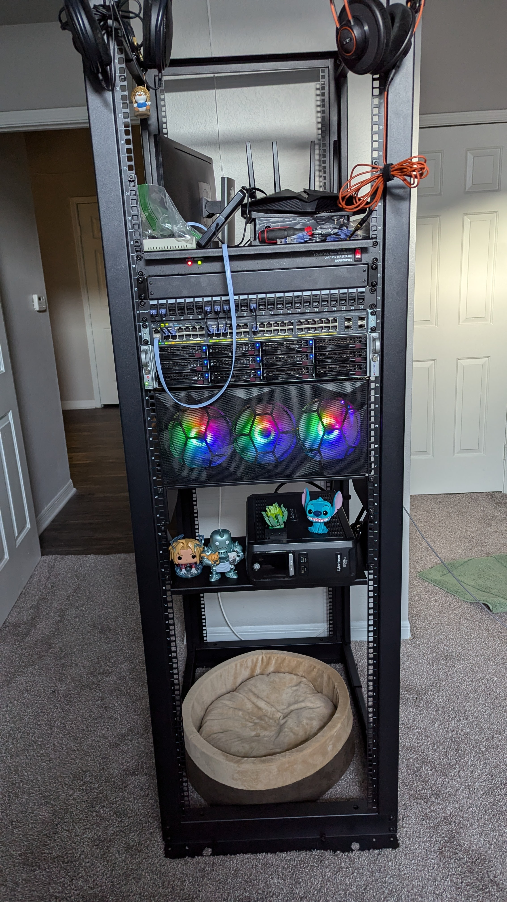
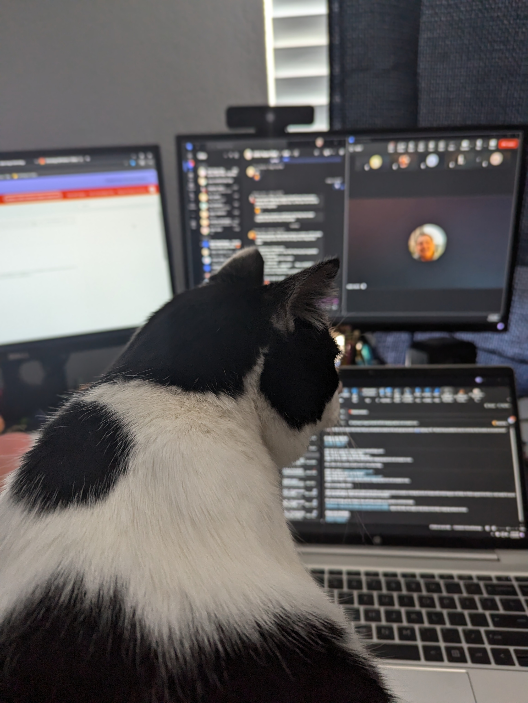

About Me

I’m usually building or running something creative or technical. I run my own Dungeons & Dragons games, which means a lot of worldbuilding, problem-solving, and occasionally improvising when players derail the entire plan. I enjoy starting new projects just to see what I can turn an idea into—this website is a good example. Whether it’s something technical in my homelab or a creative project, I like figuring things out as I go and pushing myself to make it better each time.
I’m also a bit of an audio nerd! I enjoy mixing up my setup with gear like my Schiit Vali amp and Modi DAC, along with my collection of headphones and my desktop speakers, because great sound comes in a ton of varieties. Beyond hobbies, I really value conversations on complex topics, meeting new people, and constantly challenging myself to grow. I try to stay a little competitive with who I was yesterday. I'm always learning, improving, and finding the next thing worth building.
What About My Work?

My career began as a server imaging technician back in 2021, where I worked closely with enterprise hardware and software before growing into an L2 technical support role with HP. I have supported large Windows 10 environments through their transition to Windows 365 and Intune. This has all required me to adapt quickly to constantly changing systems, policies, and deployment strategies. I’ve learned how to stay effective in fast-moving environments while resolving incidents efficiently and communicating clearly with both technical teams and end users. Over time, I’ve developed a reputation for being dependable, detail-oriented, and someone who can quickly adapt to new technologies and challenges.
My Skills
Virtualization & Containers
I keep my own personal Proxmox homelab, where I run a variety of virtual machines and Docker containers. I have experience with both KVM and LXC virtualization as well as docker containers sprinked througout.
I host a handful of local services on my homelab including a Jellyfin home media service, network attached storage using TrueNAS to manage my movie collection, a couple of videogame servers I run for me and my friends, and I run a JuiceShop to practice and develop my web application security skills.
Automation
In an era of rapidly evolving technology, I understand the importance of automation in streamlining processes and improving efficiency.
In my own homelab, I've built my own custom fan curve, it's a systemd service written in bash, to keep my server cool and most importantly QUIET!
Using Python, I've developed a script to quickly and efficiently personalize cover letters for job applications, saving me time and allowing me to focus on researching the companies I'm applying to.
Cloud Computing
I have built a few labs with AWS and used it as a staging ground developing this website. I have a strong practical understanding of cloud computing including concepts and best practices.
Currently, I've built a basic webhost using Amazon's EC2 for the host and EFS for the file storage; Just ignore that it's a template-site! If the link ever dies, then that's probably because my free trial ran up and I'm not really wanting to pay for that service.
Anyways, go check it out here!
HTML & CSS
You're lookin' right at my work! I built everything here by hand over a couple of restless nights and I fully plan on updating this website with new features so check back in when you can!
My Certifications